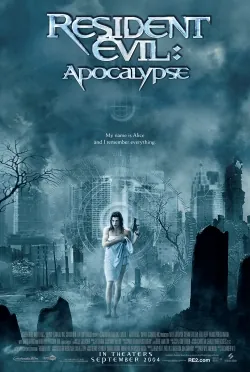

The genetics
The second Resident Evil film reveals the origin of its zombies. The T-virus was created by Dr. Charles Ashford, an Umbrella researcher, to treat his daughter Angela's genetic disease; Umbrella appropriated it, and its release in the Hive turned people into zombies. Ashford is shown as a desperate father who also holds the antiviral serum, while the corporation is the villain: it experiments on captives, turning the activist Matt into the mutated super-soldier Nemesis and enhancing Alice with the T-virus, and it covers up the outbreak by destroying Raccoon City with a nuclear bomb and blaming a power-plant meltdown. The film thus combines a well-meant gene therapy gone catastrophically wrong with a corporation that sees human beings as experimental material. Reviewers read the cover-up as an allegory of corporate and state lies. A virus that both corrects a genetic disease and reanimates the dead belongs to the video-game mythology, not to real virology.
How genetics is portrayed
- Overall portrayal of genetics
- negative A cure created with good intentions becomes a zombie plague in corporate hands, and the corporation experiments on people and lies; the ending shows Umbrella still in control of Alice.
- Outcome of the genetic intervention
- negative The T-virus has turned Raccoon City into a zombie zone, Nemesis kills the S.T.A.R.S. team, and the city is destroyed by a nuclear bomb; the serum saves only Carlos and Angela.
- Dr. Charles Ashford
- ambivalent Aim: personal, benevolent (positive). He created the T-virus to cure his daughter's genetic disease; the film presents him as a sympathetic father, but his invention caused the outbreak and he trades the survivors' rescue for his daughter's.
- Umbrella Corporation (Dr. Alexander Isaacs, Major Cain)
- villain Aim: commercial, military, power (negative). Umbrella appropriates the T-virus, mutates Matt into Nemesis, experiments on Alice and destroys the city to cover up the outbreak; it is the film's antagonist.
The story
After escaping the Hive, the Umbrella Corporation's underground genetic research facility, Alice wakes in a deserted hospital to find the zombie outbreak spreading through Raccoon City. Umbrella seals the city, leaving survivors such as the police officer Jill Valentine and Umbrella soldier Carlos Olivera to fend for themselves, and unleashes Nemesis, a mutated super-soldier. Umbrella scientist Dr. Charles Ashford, trapped in the quarantine, offers to arrange the survivors' escape if they rescue his daughter Angela, warning that Umbrella plans to destroy the city with a nuclear bomb. Angela reveals that her father created the T-virus to treat her genetic disease, and she carries an antiviral serum. At the extraction point, Umbrella's Major Cain kills Ashford and forces Alice, herself enhanced by the T-virus, to fight Nemesis, who turns out to be her former ally Matt. The survivors escape as the city is destroyed; Alice is gravely injured and wakes in an Umbrella laboratory, from which she escapes in a move Umbrella has planned.